Project 7 Part 3: Tour into the Picture
Alan Yao
Description
Some common scenes can be modelled as a picture of an axis-aligned box. By splitting the image into five user-defined planes of a box, we can approximately model that as the geometry of the scene. Of course, this does not apply to all scenes, but it does cover a non-trivial subset of possible images.
First the user defines the back box and vanishing point. This gives us the ceiling, floor, left and right sides of the box. With either the given focal length of the camera or by guessing it, we can then determine the depth of the box by looking at the ratio between the distances from the vanishing point to the inner box and the outer box, using similar triangles. That is, d = f*(dist(v,outer_box))/(dist(v,inner_box)). Given d, and fixing w and h to be the size of the inner
box, we have the dimensions and locations of each plane in world coodinates.
Then, we compute a 4-point homography from each of the user-specified boxes to the front-facing, axis-aligned box that is the size of the relevant plane. This will be the texture that is mapped onto each of the sides of the box. Finally, since we have the planes and their world coordinates, we draw each one to screen.
Results
| 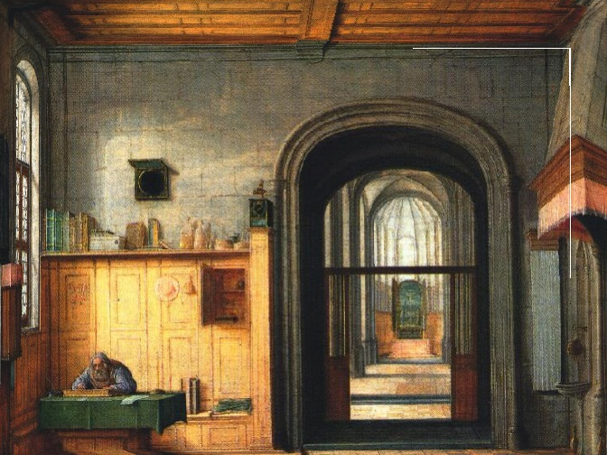 |
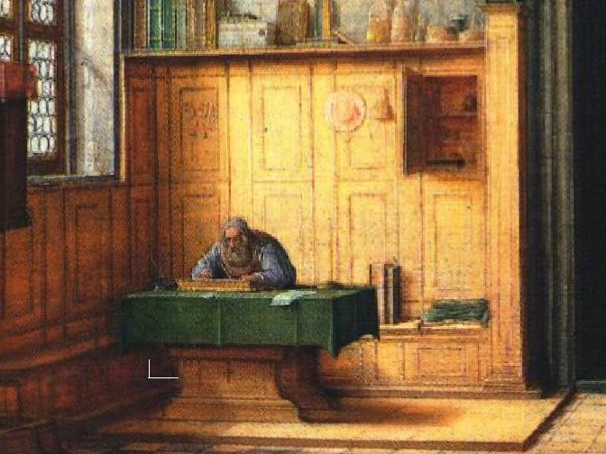 |
| 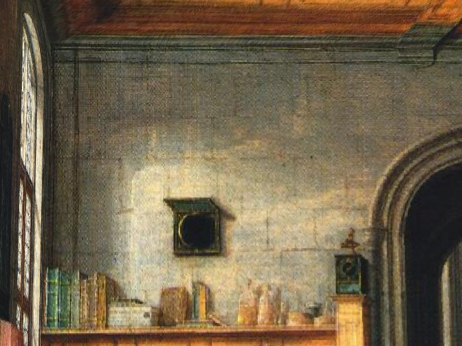 |
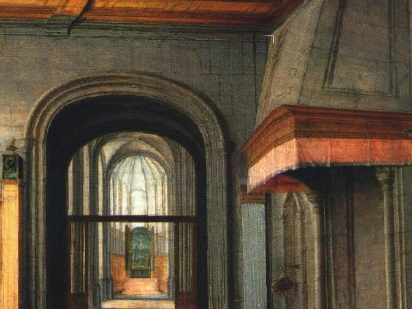 |
Here some of the bounding box edges are shown.
|
| 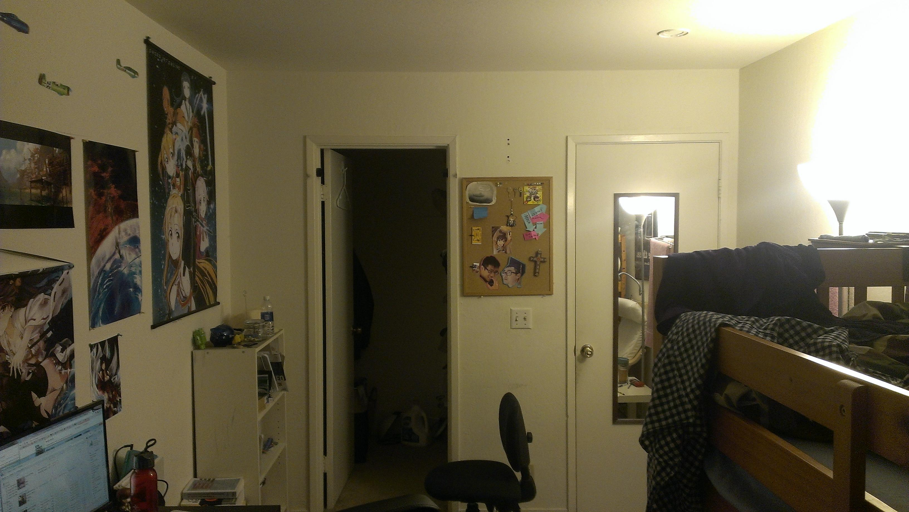 |
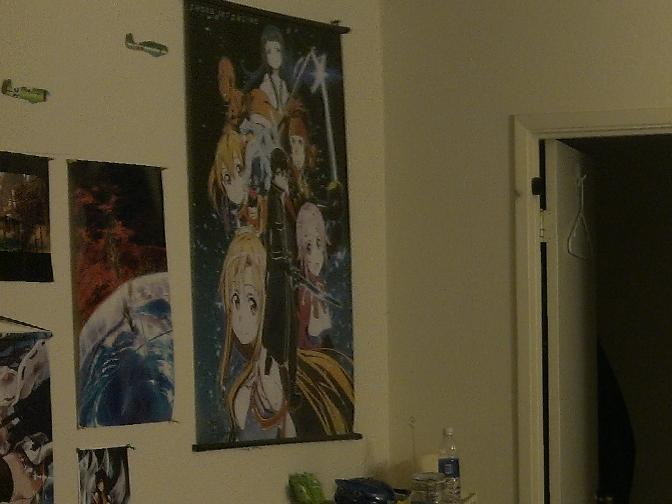 |
| 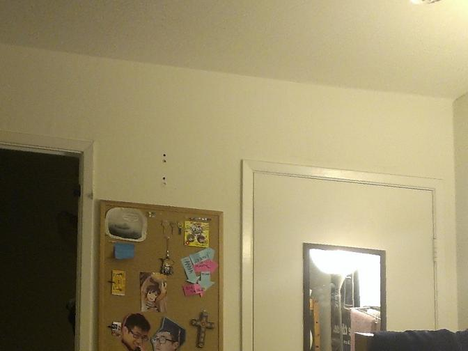 |
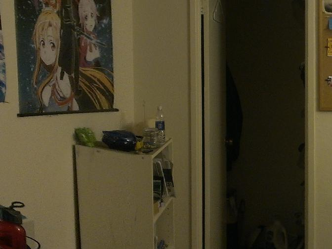 |
Tour into my room.
|
| 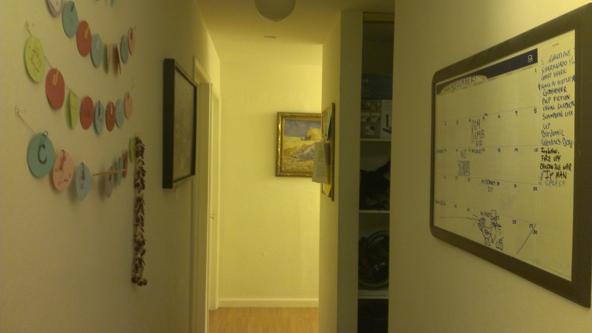 |
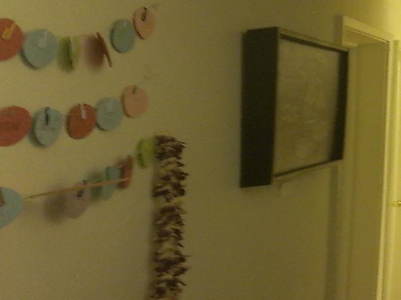 |
| 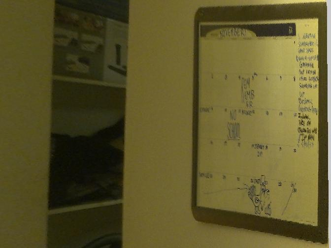 |
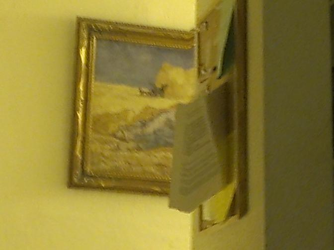 |
Tour into my hallway.
|
Bells & Whistles : Fly-through and GUI
Since we've already set up the planes, we can fly through the scene using keyboard controls by changing the camera location and eye vector. Below is a video demonstrating this functionality.
Additionally,
here is the matlab callback code for flying through a scene. Instructions for invoking are in the file.
What I learned
The idea of using an axis-aligned bounding box is pretty powerful, but is also very limited. We require user input and a specific scene geometry. It would be interesting to investigate further scene reconstruction ideas.